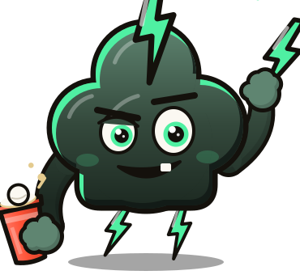
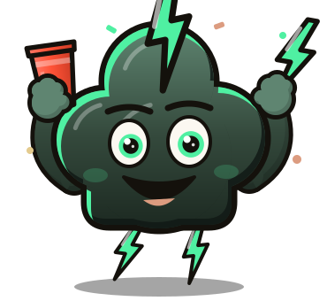
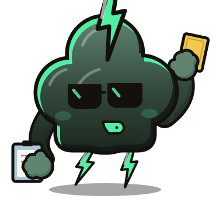
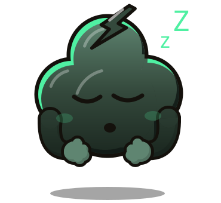

Turnier in Minuten
Teams eintragen oder per Code anmelden lassen, Gruppen und KO-Runde, Tische, Resultate mit einem Tipp. Helfer tragen mit, die Turnierleitung behält den Überblick.
Bierpong · Turniere · Trinkspiele
Chlapf plant dein Bierpong-Turnier in Minuten, zeigt den Spielstand live auf dem TV und bringt Busfahren, Pferderennen und Rundenrausch aufs Handy. Gratis, ohne Werbung, aus der Schweiz.

Teams eintragen oder per Code anmelden lassen, Gruppen und KO-Runde, Tische, Resultate mit einem Tipp. Helfer tragen mit, die Turnierleitung behält den Überblick.
Spielplan, Rangliste und Siegerehrung auf dem grossen Bildschirm. Die Gäste schauen auf dem eigenen Handy mit.
Busfahren, Pferderennen, Rundenrausch, «Ich hab noch nie» und mehr. Ein Handy reicht, mehrere gehen auch.
Konto ist optional. Wer eins hat, sammelt Level und Abzeichen, baut den eigenen Avatar und schaltet mit dem ersten Turniersieg Donni als Figur frei.



Maskottchen
Du willst wieder mal einen richtig schönen Abend mit deinen Leuten verbringen und am nächsten Tag mit einem Chlapf aufwachen? Donni, die kleine Gewitterwolke mit der Blitz-Tolle, ist dabei: Er wirft den ersten Ball, pfeift als Schiri, jubelt bei der Siegerehrung und schläft, wenn gerade nichts läuft.
Chlapf ist für Erwachsene ab dem gesetzlichen Mindestalter für Alkohol. Niemand muss trinken, um mitzuspielen: Wasser zählt genauso. Fahr nicht, wenn du getrunken hast, und schau auf deine Leute.